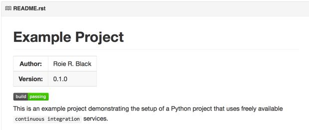
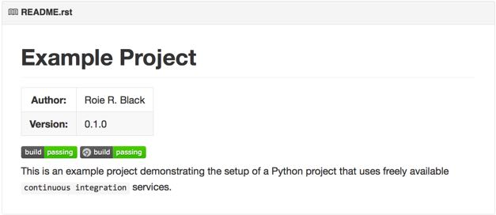

When you set out to build a significant Python project, you could work alone until your project is ready for release into the “wild”. You could do that, but you would miss out on a huge benefit you get by making things public long before it is really ready to go.
There are a bunch of free services you can use to make sure your development is going smoothly as you work through the design. Tapping into these services can help you spot problems and fix them early in the process. Here are a few of the free services you can use:
This is a big one. Employers are telling us they want to see your work on GitHub, regardless of the programming language you choose to use for your project. GitHub is free for open-source projects, or you can pay a fee to keep your projects private if your choose. Alternatively, I set up a private server running a clone of GitHub, called GitLab, for use by my students as part of their work in my classes. GitLab provides services similar to GitHub from their project website. You can also install GitLab on a Linux server and host it in your home office using a Dynamic DNS service. This will allow you to reach your server from anywhere you can get on the Internet. GitLab also offers free hosting for your project if you do not want to run your own server.
To get your project on GitHub, you sign up for a free account using a username and password. Your username becomes part of the URL your project will get. For example, I set up an example project named example_project for this lecture. GitHub set up a URL for the project at https://github.com/rblack42/example_project.git. In this URL, my username is rblack42, and the project name is ``example_project. GitHub_ added the ``.git part.
As you create the project, you have a chance to set up a basic README file, a .gitignore file that is designed for the programming language you intend to use, and a basic license file. (I use the New BSD license for my projects. By adding these few files, your project will be ready to clone onto your development system:
$ git clone https://rblack42/example_project.git``
$ cd example_project/
You will end up with a project directory named example_project on your system already set up so Git can manage it.
If you work on several Python projects on the same development machine, eventually you will run into dependency issues. You have one package that needs another one to function, and these packages end up needing conflicting versions of each other. Ian Bicking solved this problem by creating the virtualenv package which sets up an isolated Python environment where you can install only those packages (with correct versions) needed by your project. Furthermore, you can set up a requirements.txt file and list all the packages and versions you need, and let pip install everything for you. Most serious Python developers use these tools as part of their normal work flow!
As an example, on my Mac I installed virtualenv using this command:
.. code-block:: text
$ pip install virtualenv
Next, I added an alias to my .bash_profile that looks like this:
alias workon='source _venv/bin/activate'
Finally, in my newly cloned project directory, I do this:
~/_projects/example_project$ virtualenv _venv
New python executable in _venv/bin/python2.7
Also creating executable in _venv/bin/python
Installing setuptools, pip...done.
When I want to work on the project, I do this:
~/_projects/example_project$ workon
(_venv)~/_projects/example_project
Notice that the prompt has changed to remind you that you are working in a “virtual environment”. There is a command to deactivate this environment, but I usually just close the window.
Note
I have a habit of naming some directories with a leading underscore. That makes these names appear at the top of any directory listing I see, so I can get to it quickly as I navigate around in the file explorer tools.
A nice Python package for managing tests is PyTest. Now that we are working in a virtualenv, we can install this package easily using pip. To demonstrate how the requirements.txt file works, here is the firat line I add to this file in the new project:
pytest==2.6.4
Then you install it by doing this:
$ pip install -r requirements.txt
Note
If you leave off the version part (‘==2.6.4’), you get the most recent version. After doing that, you should update your requirements.txt file to reflect the version you actually used in your project. That way, if the project evolves, you can still install the correct version. You can update your project to use the new version as needed at a later time.
Now that PyTest has been installed, let’s give it something to test. Normally we keep all tests in a separate directory. You may or may not decide to release the tests with your project. I feel that releasing the tests is a good idea, since you can find out if there are any problems in unexpected environments by letting your users test things and report back if any issues pop up!
Here is the first test file, named test_dummy.py. Create a new tests subdirectory for this file:
1 2 3 4 5 | def inc(x):
return x+1
def test_inc():
assert inc(3) == 4
|
Before we run this test, we need to tell PyTest not to look into our virtualenv subdirectory, or else it will try to run tests we are not really interested in running. To do this, create a pytest.ini file in the project root directory with these lines:
1 2 | [pytest]
norecursedirs = _venv
|
With this test and control file in place, we can run the test:
$ py.test
================================ test session starts ================================
platform darwin -- Python 2.7.8 -- py-1.4.26 -- pytest-2.6.4
collected 1 items
tests/test_dummy.py .
============================= 1 passed in 0.03 seconds ==============================
Great! Our project is on track with a real (silly) test that works, and we have not even started writing any real project code yet! Time to let the world know how our project is doing!
TravisCI is a nice free service that works with GitHub to test your project code. You can sign up for this service using your GitHub credentials, making the process pretty easy! TravisCI will download a list of your public projects from GitHub and you can select the ones you want to test with this service by clicking on a menu item.
You need to add a new file to the root of your project folder, and commit everything in your project, then push your changes up to GitHub.
Here is a starter .travis.yml file for this project:
1 2 3 4 5 6 7 8 9 10 11 12 13 14 15 | language: python
python:
- "2.7"
- "3.4"
# command to install dependencies
install:
- pip install -r requirements.txt
# command to run tests
script:
- nosetests --with-coverage
after_success:
- coveralls
|
Before we check all of this in to GitHub, we need to see what Git thinks about everything:
$ git status
On branch master
Your branch is up-to-date with 'origin/master'.
Untracked files:
(use "git add <file>..." to include in what will be committed)
.travis.yml
_venv/
pytest.ini
requirements.txt
tests/
nothing added to commit but untracked files present (use "git add" to track)
We do not want the virtualenv directory to end up on GitHub so we edit the .gitignore file to add these lines at the end:
# virtualenv
_venv
Rerun git status to confirm that Git is no longer looking at that directory, then commit and push your changes:
$ git add .
$ git commit -m "initial project setup"
$ git push origin master
After this push, you can navigate to your TravisCI account page and watch the action. Travis will clone your project into a new virtualenv and run your tests. Depending on the load on their servers, this may take a few minutes.
Here is the last part of what I saw on my build run:
git.checkout
0.05s$ git clone --depth=50 --branch=master git://github.com/rblack42/example_project.git rblack42/example_project
Cloning into 'rblack42/example_project'...
remote: Counting objects: 16, done.
remote: Compressing objects: 100% (10/10), done.
remote: Total 16 (delta 3), reused 12 (delta 3), pack-reused 0
Receiving objects: 100% (16/16), done.
Resolving deltas: 100% (3/3), done.
Checking connectivity... done.
$ cd rblack42/example_project
$ git checkout -qf 8b153311fd5bcdc054dd67e000a0f2e5b849a056
0.01s$ source ~/virtualenv/python3.4/bin/activate
$ python --version
Python 3.4.2
$ pip --version
pip 6.0.7 from /home/travis/virtualenv/python3.4.2/lib/python3.4/site-packages (python 3.4)
install
0.52s$ pip install -r requirements.txt
You are using pip version 6.0.7, however version 6.0.8 is available.
You should consider upgrading via the 'pip install --upgrade pip' command.
Requirement already satisfied (use --upgrade to upgrade): pytest==2.6.4 in /home/travis/virtualenv/python3.4.2/lib/python3.4/site-packages (from -r requirements.txt (line 1))
Requirement already satisfied (use --upgrade to upgrade): py>=1.4.25 in /home/travis/virtualenv/python3.4.2/lib/python3.4/site-packages (from pytest==2.6.4->-r requirements.txt (line 1))
0.34s$ py.test
============================= test session starts ==============================
platform linux -- Python 3.4.2 -- py-1.4.26 -- pytest-2.6.4
collected 1 items
tests/test_dummy.py .
=========================== 1 passed in 0.05 seconds ===========================
The command "py.test" exited with 0.
Done. Your build exited with 0.
Once you set things up, every time you push changes to your project on GitHub TravisCI gets notified and it checks our a copy of your code into a brand new virtual server, then runs your tests to see that everything is working. If so, you can post a “badge” on your project README page so folks can see that the project is in good shape. On the other hand, if your project fails any of the tests you have set up, the badge will show that as well, so potential users of your code will shy away, or might help you fix things if this is a cool project! Open-source can be fun!
To see your new badge, add these lines to the README file and get it up to GitHub (which will trigger a new build, by the way!). I like to use reStructuredText markup in my README file, and GitHub formats this nicely for the web browser.
Example Project
###############
:author: Roie R. Black
:version: 0.1.0
.. image:: https://travis-ci.org/rblack42/example_project.svg?branch=master.
This project is a demonstration of many ``continuous integration`` services
for Python developers.
And, here is my newly issued badge:
That green badge is what developers stay up late at night to see. If the build fails, the badge is red and says “failing”. Not a good situation to be in when you stop working!
Another nice free service that can test your application is AppVeyor. This project is unique in that it will deploy and test your project on a Windows server. If you expect your users to want to run your project on Windows systems, this service is a must!
Once again, you can use your GitHub credentials to set up an account here.
You need to add a configuration file in the project root, and this is another YAML file. I had some issues building this file, since it is very picky about spaces use din indenting. Fortunately, there is a appveyor.yml validation page on the AppVeyor site that will check your file before you push it to GitHub.
Here is the basic file I set up:
1 2 3 4 5 6 7 8 9 10 11 12 13 14 15 16 17 18 19 | version: '{build}'
environment:
matrix:
- PYTHON: "C:/Python27"
- PYTHON: "C:/Python34"
init:
- git config --global core.autocrlf input
install:
- ps: (new-object net.webclient).DownloadFile('https://bootstrap.pypa.io/get-pip.py', 'C:/get-pip.py')
- "%PYTHON%/python.exe C:/get-pip.py"
- "%PYTHON%/Scripts/pip.exe install --upgrade setuptools"
- "%PYTHON%/Scripts/pip.exe install -r requirements.txt"
build: False
test_script:
- "%PYTHON%/Scripts/py.test"
|
Now, when we push changes to the project to GitHub, both TravisCI and AppVeyor will run builds to verify that the project works properly on both Linux and Windows. (Now, I am wondering if there is a similar service for Macs!)
AppVeyor also creates a badge for your README file. To get the URL for your badge, check on the settings menu for the project. I added the URL to my README file, and this is the result:
Hey! We are making progress!
WHen testing code, one of the metrics we should monitor is the percentage of the code in the project that has been tested. This is not a complete measure of the quality of the code, but there is an old saying:
If it has not been tested, it does not work!
So, we want to make sure all lines of cod ein the project have been exercised during some test.
There is a nice tool for Python projects that can do this check: coveralls. We install this package by adding another line to our requirements.txt file:
coveralls==
There is another free service Coveralls.io, that will create a nice report on your coverage statistics.
Every project needs documentation, and the best projects have excellent user level, and developer level documentation. Much of the documentation is produced using python Sphinx which is the standard tool used by the Python project itself.
ReadTheDocs is a web site that will post your documentation for the world to see. All you need to do is generate then using Sphinx as part of your project on GitHub, then set up ReadTheDocs to pull down new versions every time you commit changes to your code. (You do update the documentation as well, right?)
Sign up for a free account on ReadTheDocs and use their web menu to set up the project. Make sure you add SPhinx to your requirememts.txt file:
sphinx==1.2.3
Now, each time you commit changes, your documentation will be updated.
Tox is a command line tool that checks to see if your project works properly with multiple versions of Python. It will create a virtual environment for designated versions of Python, install your project in those environments, then run test to make sure everything works. You can use Tox as a standalone tool on your workstation, or have TravisCI automatically do all of these tests for you.
To use Tox in your project, you add one file, tox.ini to the root of your project. Then, you run the tox command in that project directory. Here is a starter tox.ini file:
[tox]
envlist = py27, py34
[testenv]
deps=pytest
commands=py.test
This setup assumes that the project is set up to run tests using PyTest, and the script will run the tests using Python 2.7 and Python 3.4.
To see how to set all of this up, let’s create a dummy project with all of these services at work to check things. Stand back, this will involve a bit of work!
Step1: Create the project directory
Step2: Get the project on GitHub
Step3: Add some sample code
Step5: Add a few tests
Step6: Set Up TravisCI
Step7: Set up your Documentation
Step8: Add in ReadTheDocs
Step8: Add in